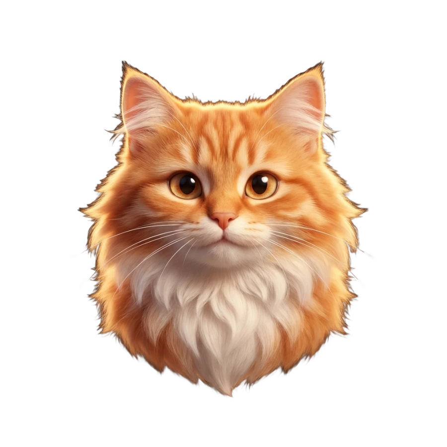
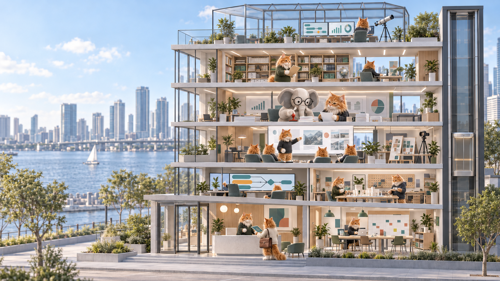
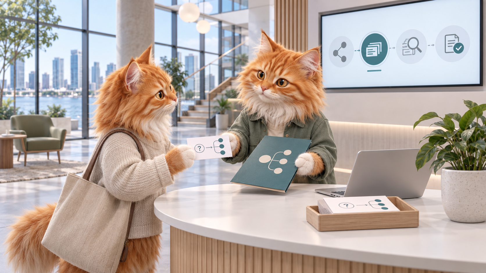
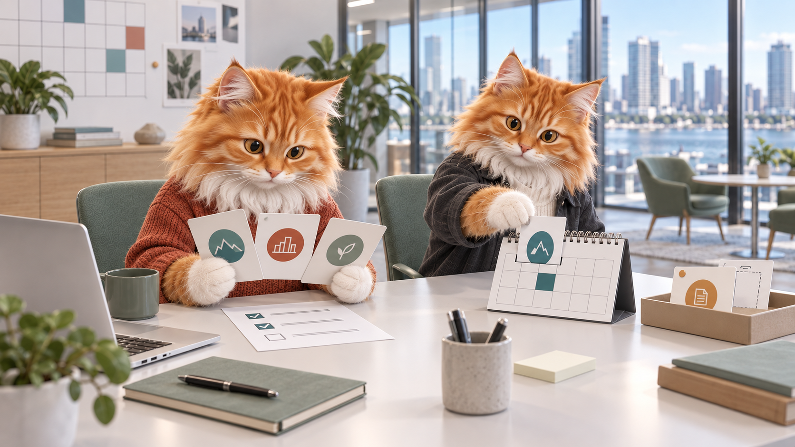
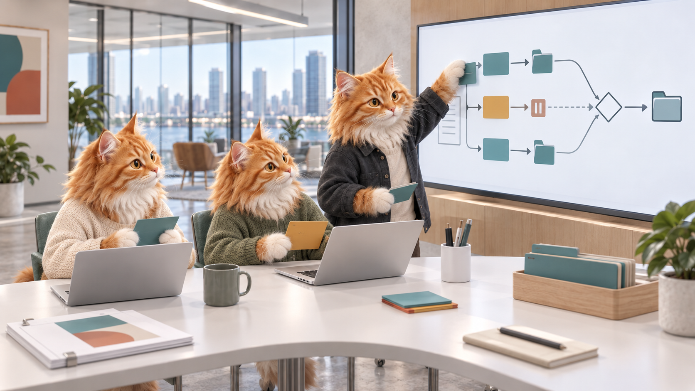
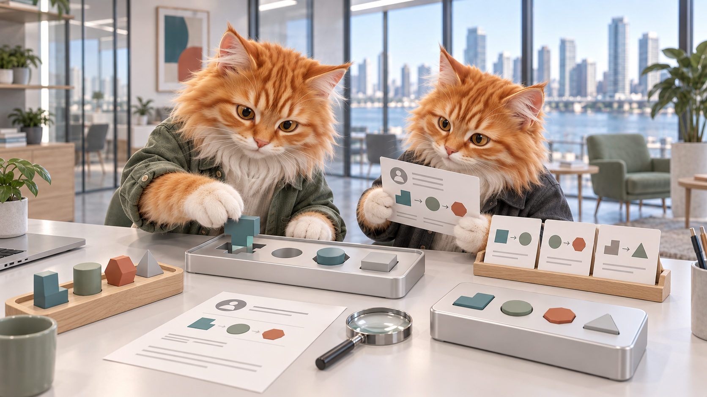
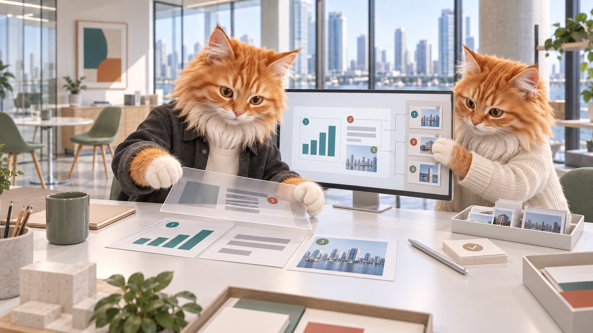
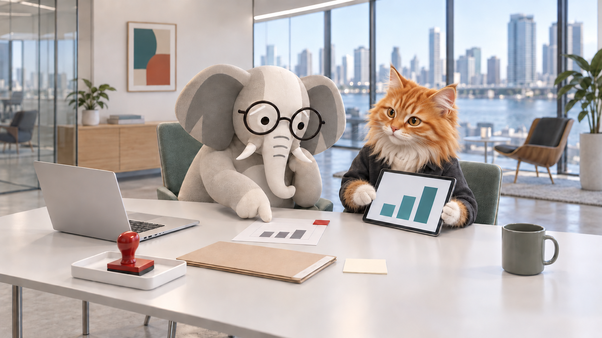
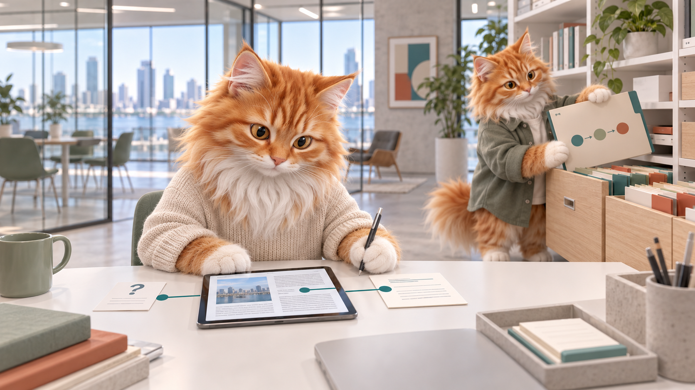
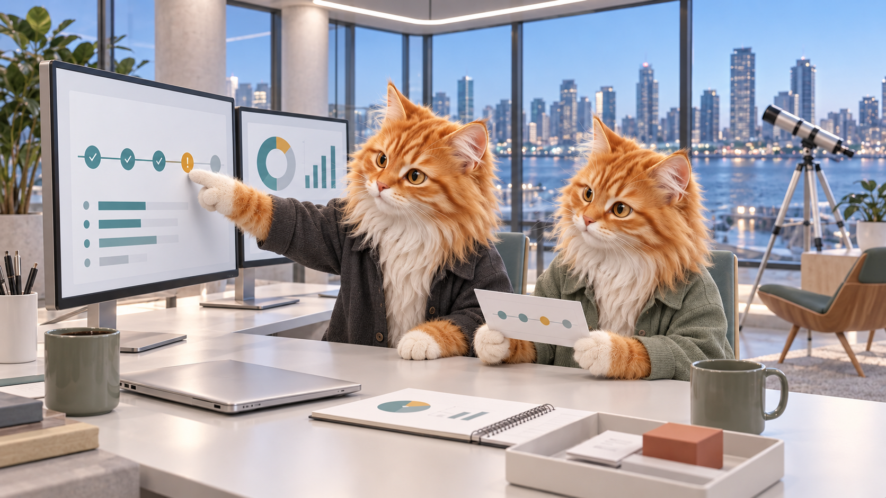

Workflow
FundMeMeow
Prioritize supplied funding opportunities by deadlines, requirements and blockers.
Packaging in progressVisit room ↗

OpenMeow. A world in the making
Agents. Skills. Possibilities.
A world of tools that help you make, coordinate, question and move forward. Come meet the residents.
Step insideGround · 01
Lobby & concierge01 / 08A useful brief opens the right door. Find a capability by outcome, then explore the tools and workflows behind it.
Find a capability
Ground · 02
Operations & funding02 / 08Compare opportunities, surface prerequisites and choose the next action. A home for FundMeMeow and the everyday decision routines of Founder Ops.
Explore the workflowsWorkflow components · packaging in progress

Level 01 · 03
Mission control03 / 08Subtle Lasagne brings workflow design and bounded specialist work together. Plan assignments, inspect checkpoints and keep human decisions in the loop.
Explore Subtle LasagneSource project · integration in progress

Level 01 · 04
Agent & plugin workshop04 / 08Prepare role briefs, reuse proven skills and inspect how the pieces connect. Agent Mint turns delegation into explicit inputs, boundaries and return contracts.
Explore Agent MintTooling & skills · setup required

Level 02 · 05
Creation studios05 / 08/dontgaslightme is the home for presentations with editable structure, linked evidence and deliberate revisions. Nearby: graphics, 3D and visual production workflows.
Explore /dontgaslightmeSource project · provider setup required

Level 03 · 06
Gellphant review chamber06 / 08Meet Gellphant, the anti-sycophant elephant. Challenge confident claims, compare them with the evidence and make uncertainty visible before moving forward.
Meet GellphantReview tools & prompts · human judgment matters

Level 04 · 07
Research & memory07 / 08Connect questions to references and useful notes. HISS retrieval and portable handoffs help carry context from one session to the next.
Explore HISSRetrieval & handoff tools · setup required

Roof · 08
The observatory08 / 08Follow runs, inspect exceptions and account for the work. OpenMeow and Agent Run Ledger give receipts, costs and prior activity a place to be seen.
Explore OpenMeowObservability components · connection required

Choose your own route
Products, reusable components and emerging workflows. Explore a source project or visit its room to see where it fits.
23 capabilities
Workflow
Prioritize supplied funding opportunities by deadlines, requirements and blockers.
Workflow
Decision memos, weekly briefs, meeting preparation and follow-up routines.
Architecture
Watch, gate and remember: an umbrella for observation, review and session memory.
Platform
Design workflows and coordinate bounded specialist assignments and returns.
CLI
Inspect repository contracts and find dependency-ready mission tasks.
Runtime component
Preserve tasks, checkpoints, human decisions and result artifacts.
Runtime component
Supervise worker events, policy, cancellation and recovery.
Skill & CLI
Prepare delegation contracts with inputs, authority and return requirements.
Skills
Reusable methods for browser work, visual review and artifact production.
Product
Create editable decks with evidence, version-bound edits and receipts.
Integration
Explore conversion from fixed graphics into editable elements.
3D workflow
Build and measure 3D artifacts from sourced specifications.
Workbench
Review visual references and compose real text over generated imagery.
Media workflow
Produce atmospheric visuals, parallax and generative audio.
Review agent
Challenge unsupported claims, apparent compliance and weak verification.
Review skill
Review plans for omissions, failure paths and verification gaps.
Verification skill
Collect browser and interaction evidence before calling work done.
Workflow
Connect evidence, visual review, approval and released artifact versions.
Retrieval layer
Retrieve knowledge through interchangeable strategies with visible traces.
Skill
Resume work across agents and sessions with explicit artifacts and authority.
Verification toolkit
Check transferred artifacts and configuration for unexpected changes.
Observability
Explore agent events, task traces, costs and structured receipts.
Plugin
Find what ran, on which machine, and where the result was saved.
No matching capabilities. Try a broader word such as “review” or “workflow”.